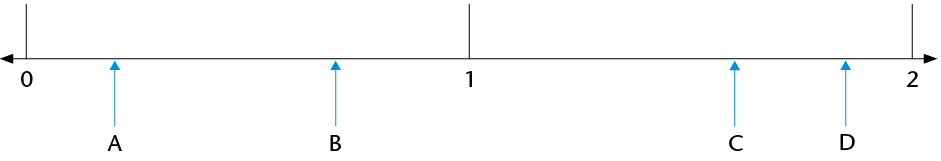

Die desimale notasie vir breuke
In hierdie hoofstuk gaan jy meer leer oor desimale notasie en hoe dit met gewone breuke en persentasies verband hou. Jy gaan ook leer hoe om desimale getalle te orden en vergelyk, en hoe om berekeninge met desimale getalle te doen.
Ander simbole vir tiendes en honderdstes
Tweer tiendes en honderdstes...
-
-
Watter deel van die reghoek hier onder is geel ingekleur?

-
Watter deel van die reghoek is rooi? Watter deel is blou? Watter deel is groen en watter deel is nie ingekleur nie?
0,1 is ’n ander manier om \(\frac{1}{10}\) te skryf en
\(0,01\) is ’n ander manier om \(\frac{1}{100}\) te skryf.
\(0,1\) en \(\frac{1}{10}\) is verskillende notasies vir dieselfde getal.
\(\frac{1}{10}\) word (gewone) breuknotasie ) genoem
en \(0,1\) word desimale notasie genoem.
-
-
Skryf die antwoorde vir 1(a) en (b) in desimale notasie.
-
3 tiendes en 7 honderdstes van ’n reghoek is rooi ingekleur, en 2 tiendes en 6 honderdstes van die reghoek is bruin ingekleur. Watter deel van die reghoek (hoeveel tiendes en hoeveel honderdstes) is nie ingekleur nie? Skryf jou antwoord in breuknotasie en in desimale notasie.
-
Maandag het Steve 3 tiendes en 7 honderdstes van ’n strook licorice geëet. Dinsdag het Steve 2 tiendes en 5 honderdstes van die strook geëet. Hoeveel licorice het hy altesaam op Maandag en Dinsdag geëet? Skryf jou antwoord in breuknotasie en in desimale notasie.
-
Lebogang se antwoord vir vraag 4 is 5 tiendes en 12 honderdstes. Susan se antwoord is 6 tiendes en 2 honderdstes. Wie is reg, of is hulle albei verkeerd?
Dieselfde hoeveelheid kan op verskillende maniere uitgedruk word in tiendes en honderdstes. Byvoorbeeld, 3 tiendes en 17 honderdstes kan uitgedruk word as 2 tiendes en 27 honderdstes of 4 tiendes en 7 honderdstes.
Mense regoor die wêreld het ooreengekom om die getal honderdstes in sulke stellings onder 10 te hou. Dit beteken die normale manier om die hoeveelheid hier bo uit te druk is 4 tiendes en 7 honderdstes.
In desimale notasie geskryf, is 4 tiendes en 7 honderdstes 0,47 . Dit word gelees as nul komma vier sewe en NIE nul komma sewe-en-veertig nie.
-
Wat is elk van die volgende getalle in desimale notasie?
- \(3\frac{7}{10}\)
- \(4\frac{19}{100}\)
- \(\frac{47}{10}\)
- \(\frac{3}{100}\)
- \(3\frac{7}{10}\)
... en duisendstes
\(0,001\) is ’n ander manier om \(\frac{1}{1000}\) te skryf.
-
Wat is die desimale notasie vir elk van die volgende?
- \(\frac{7}{1000}\)
- \(\frac{9}{1000}\)
- \(\frac{147}{1000}\)
- \(\frac{999}{1000}\)
- \(\frac{7}{1000}\)
-
Skryf die volgende getalle in desimale notasie:
- \(2+\frac{3}{10} + \frac{7}{100} + \frac{4}{1000}\)
- \(12 + \frac{1}{10} + \frac{4}{1000}\)
- \(2 + \frac{4}{1000}\)
- \(67\frac{123}{1000}\)
- \(34\frac{61}{1000}\)
- \(654\frac{3}{1000}\)
- \(2+\frac{3}{10} + \frac{7}{100} + \frac{4}{1000}\)
Persentasies en desimale getalle
Honderdstes, persentasies en desimale
-
Die reghoek hier onder is in klein deeltjies verdeel.

-
Hoeveel van hierdie klein deeltjies is daar in die reghoek? En in een tiende van die reghoek?
-
Watter deel van die reghoek is blou? Watter deel is groen? Watter deel is rooi?
In plaas van 6 honderdstes, kan jy sê 6 persent. Dit beteken dieselfde.
10 persent van die reghoek hier bo is geel.
-
-
Gebruik die woord “persent” om te sê watter deel van die reghoek is groen. Watter deel is rooi?
-
Watter persentasie van die reghoek is blou? Watter persentasie is wit?
Ons sê nie: “Hoeveel persent van die reghoek is groen?” nie. Ons sê: “Watter persentasie van die reghoek is groen?”
Die simbool % word vir “persent” gebruik.
In plaas daarvan om “17 persent” te skryf, kan jy 17% skryf.
Persent beteken honderdstes. Die simbool % lyk ’n bietjie soos die simbool \(\frac{}{100}\)
-
-
Hoeveel is 1% van R400? (Met ander woorde: Hoeveel is \(\frac{1}{100}\) of 0,01 van R400?)
-
Hoeveel is 37% van R400?
-
Hoeveel is 37% van R700?
-
-
-
25 appels word gelykop tussen 100 mense verdeel. Hoeveel appels kry elkeen? Skryf jou antwoord as ’n gewone breuk en as ’n desimale getal.
-
Hoeveel is 1% (een honderdste) van 25?
-
Hoeveel is 8% van 25?
-
Hoeveel is 8% van 50? En hoeveel is 0,08 van 50?
0,37 en 37% en \(\frac{37}{100}\) is verskillende simbole vir 100 dieselfde ding: 37 honderdstes.
-
-
Druk elk van die volgende op drie maniere uit:
- in desimale notasie,
- in persentasienotasie en
- indien moontlik, in gewone breuknotasie, deur honderdstes te gebruik.
-
3 tiendes
7 honderdstes
-
37 honderdstes
-
7 tiendes
-
3 kwarte
-
7 agtstes
-
-
Hoeveel is 3 tiendes van R200 en 7 honderdstes van R200 altesaam?
-
Hoeveel is \(\frac{37}{100}\) van R200?
-
Hoeveel is 0,37 van R200?
-
En hoeveel is 37% van R200?
-
-
Druk elk van die volgende op drie maniere uit:
- in desimale notasie,
- in the persentasienotasie en
- in the gewone breuknotasie, deur honderdstes te gebruik.
-
20 honderdstes
-
50 honderdstes
-
25 honderdstes
-
75 honderdstes
-
Jan eet ’n kwart van ’n waatlemoen. Watter persentasie van die waatlemoen is dit?
-
Sibu drink 75% van die melk in ’n bottel. Skryf 75% in gewone breuknotasie?
-
Jeminah gebruik 0,75 (7 tiendes en 5 honderdstes) van die verf in ’n blik. Watter persentasie van die verf gebruik sy?
-
-
Die vloer van ’n groot vertrek word hier regs gewys. Watter deel van die vloer is met elk van die vier kleure bedek? Druk jou antwoord op vier maniere uit:
-
in gewone breuknotasie, met honderdstes,
-
in desimale notasie,
-
in persentasienotasie, en
-
indien moontlik, in gewone breuknotasie as tiendes en honderdstes (byvoorbeeld \(\frac{3}{10} + \frac{4}{100}\)).

(a)
(b)
(c)
(d)
wit
rooi
geel
swart
-
Desimale afmetings
Meet op ’n getallelyn
-
Lees elkeen van die lengtes by die gemerkte punte (A tot D) op die getallelyne. Gee jou antwoorde so akkuraat as moontlik in desimale notasie.
-

-

-

-

-

-

-

-
-
Dui die volgende getalle aan op die getallelyn:
- 0,6
- 1,2
- 1,85
- 2,3
- 2,65
- 3,05
- 0,08

-
Dui die volgende getalle aan op die getallelyn:
- 3,06
- 3,08
- 3,015
- 3,047
- 3,005
Nog desimale begrippe
Desimale spronge
-
Skryf die volgende tien getalle in die getallerye en wys jou getallerye, sover moontlik, op die getallelyne.
-
0,2; 0,4; 0,6;
-

-
Hoeveel 0,2’s is daar in 1?
-
Skryf 0,2 as ’n gewone breuk.
-
-
0,3; 0,6; 0,9;
-

-
Hoeveel 0,3’s is daar in 3?
-
Skryf 0,3 as ’n gewone breuk.
-
-
0,25; 0,5;
-

-
Hoeveel 0,25’s is daar in 1?
-
Skryf 0,25 as ’n gewone breuk.
’n Sakrekenaar kan geprogrammeer word om dieselfde bewerking oor en oor te doen. Byvoorbeeld, druk 0,1 \(+\) \(=\) (moenie CLEAR of enige ander bewerking druk nie). Druk die \(=\) knoppie herhaaldelik en kyk wat gebeur.
Die sakrekenaar tel in 0,1’s.
-
-
Jy kan jou antwoorde vir vrae 1 tot 3 met ’n sakrekenaar kontroleer. Programmeer die sakrekenaar om jou te help.
-
Skryf die volgende vyf getalle in die getallery:
9,3; 9,2; 9,1;
0,15; 0,14; 0,13; 0,12;
-
Programmeer jou sakrekenaar en kontroleer jou antwoorde daarmee.
Plekwaarde
-
Skryf elk van die volgende as een getal:
- \(2 + 0,5 + 0,07\)
- \(2 + 0,5 + 0,007\)
- \(2 + 0,05 + 0,007\)
- \(5 + 0,4 + 0,03 + 0,001\)
- \(5 + 0,04 + 0,003 + 0,1\)
- \(5 + 0,004 +
0,3 + 0,01\)
- \(2 + 0,5 + 0,07\)
Ons kan 3,784 in uitgebreide notasie skryf as \(3,784 = 3 + 0,7 + 0,08 + 0,004\).Ons kan ook die dele soos volg benoem:
- die 3 stel die ene voor
- die 7 stel die tiendes voor
- die 8 stel die honderdstes voor
- die 4 stel die duisendstes voor
Ons sê: die waarde van die 7 is 7 tiendes maar die plekwaarde van die 7 is tiendes, want enige syfer in daardie plek sal die getal tiendes voorstel.
Byvoorbeeld, in 2,536 is die waarde van die 3 dus 0,03 en sy plekwaarde is honderdstes, want die waarde van die plek waar dit staan is honderdstes.
-
Skryf nou die waarde (in desimale notasie) en die plekwaarde van elk van die onderstreepte syfers neer.
- 2,345
- 4,678
- 1,953
- 34,856
- 564,34
- 0,987
- 2,345
Orden en vergelyk desimale getalle
Van grootste na kleinste en kleinste na grootste
-
Orden die volgende getalle van grootste na kleinste. Verduidelik jou metode.
0,8; 0,05; 0,5; 0,15; 0,465; 0,55; 0,75; 0,4; 0,62
-
Hier onder is die uitslae van ’n paar items in die 2012 Olimpiese Spele in Londen. Rangskik die uitslae van eerste tot laaste plek. Gebruik die laaste kolom daarvoor.
-
Vroue: Verspring - Eindronde
Naam
Land
Afstand
Plek
Anna Nazarova
RUS
6,77 m
Brittney Reese
VSA
7,12 m
Elena Sokolova
RUS
7,07 m
Ineta Radevica
LAT
6,88 m
Janay DeLoach
VSA
6,89 m
3rd
Lyudmila Kolchanova
RUS
6,76 m
-
Vroue: 400 m-hekkies - Eindronde
Naam
Land
Tyd
Plek
Georganne Moline
VSA
53,92 s
Kaliese Spencer
JAM
53,66 s
4th
Lashinda Demus
VSA
52,77 s
Natalya Antyukh
RUS
52,70 s
T'erea Brown
VSA
55,07 s
Zuzana Hejnová
CZE
53,38 s
-
Mans: 110 m-hekkies - Eindronde
Naam
Land
Tyd
Plek
Aries Merritt
VSA
12,92 s
Hansle Parchment
JAM
13,12 s
Jason Richardson
VSA
13,04 s
Lawrence Clarke
GBR
13,39 s
Orlando Ortega
CUB
13,43 s
Ryan Brathwaite
BAR
13,40 s
-
Men: Javelin - Final
Naam
Land
Afstand
Plek
Andreas Thorkildsen
NOR
82,63 m
Antti Ruuskanen
FIN
84,12 m
Keshorn Walcott
TRI
84,58 m
Oleksandr Pyatnytsya
UKR
84,51 m
Tero Pitkämäki
FIN
82,80 m
Vítezslav Veselý
CZE
83,34 m
-
-
Gee ’n getal wat tussen die twee gegewe getalle voorkom. (Dit beteken jy kan enige getal gee wat enige plek tussen die twee getalle lê.)
-
3,5 en
3,7
- 3,9 en
3,11
- 3,1 en
3,2
-
3,5 en
3,7
-
Hoeveel getalle is daar tussen 3,1 en 3,2?
-
Vul <, > of = in.
- 0,4 ☐ 0,52
- 0,4 ☐ 0,32
- 2,61 ☐ 2,7
- 2,4 ☐ 2,40
- 2,34 ☐ 2,567
- 2,34 ☐ 2,251
Afronding
Net soos telgetalle tot die naaste 10, 100 of 1 000 afgerond kan word, kan desimale getalle tot die naaste telgetal of tot een, twee, drie, ens. syfers na die komma afgerond word. ’n Getal word afgerond tot ’n getal waarvan die waarde die naaste is aan sy eie waarde voor afronding. So word 13,24 afgerond tot een desimale plek 13,2 en 13,26 afgerond tot een desimale plek 13,3. ’n Getal waarvan die laaste syfer ’n 5 is, is ewe ver van die ander twee getalle waartoe dit afgerond kan word. Sulke getalle word tot die grootste getal afgerond. Byvoorbeeld: 13,15 afgerond tot een desimale plek word 13,2.
Sê dit naastenby maar nie presies nie
-
Rond elk van die volgende getalle af tot die naaste telgetal:
7,6; 18,3; 204,5; 1,89; 0,9; 34,7; 11,5; 0,65
-
Rond elk van die volgende getalle af tot een desimale plek:
7,68; 18,93; 21,47; 0,643; 0,938; 1,44; 3,81
-
Rond elk van die volgende getalle af tot twee desimale plekke:
3,432; 54,117; 4,809; 3,762; 4,258; 10,222; 9,365; 299,996
Rond af om jou te help bereken
-
John en drie van sy broers verkoop ’n ou fiets vir R44,65. Hoe kan die broers die geld regverdig verdeel?
-
’n Man koop 3,75 m hout teen R11,99 per meter. Wat kos die hout hom?
-
Skat die antwoorde van elk van die volgende deur die getalle af te rond:
- \(89,3 \times 3,8\)
- \(227,3 + 71,8 - 28,6\)
- \(89,3 \times 3,8\)
Optel en aftrek met desimale getalle
Hoofrekene
-
Voltooi die getalleketting.

Wanneer jy desimale getalle optel of aftrek, kan jy hulle na gewone breuke verander om die berekening makliker te maak.
Byvoorbeeld:
\(0,4 + 0,5 \\ = \frac{4}{10} + \frac{5}{10} \\ = \frac{9}{10} \\ = 0,9\)
-
Bereken elk van die volgende:
- \(0,7 + 0,2\)
- \(0,7 + 0,4\)
- \(1,3 + 0,8\)
- \(1,35 + 0,8\)
- \(0,25 + 0,7\)
- \(0,25 + 0,07\)
- \(3 - 0,1\)
- \(3 - 0,01\)
- \(2,4 - 0,5\)
- \(0,7 + 0,2\)
Probleme uit die werklike lewe
-
Die eienaar van ’n internetkafee kyk aan die einde van die dag na haar bankstaat. Die volgende bedrae is in haar rekening inbetaal: R281,45; R39,81; R104,54 en R9,80. Hoeveel geld is daardie dag in haar rekening inbetaal?
-
Aan die begin van ’n reis wys die odometer in ’n motor: 21589,4. Aan die einde van die reis wys die odometer: 21763,7. Watter afstand is afgelê?
-
By ’n atletiekbyeenkoms hardloop ’n atleet die 100 m-wedloop in 12,8 sekondes. Die aankondiger sê dat die atleet die vorige rekord met 0,4 sekondes verbeter het. Wat was die vorige rekord?
-
In ’n branderrykompetisie gee vyf beoordelaars vir elke deelnemer ’n punt uit 10. Die hoogste en die laagste punte word geïgnoreer en die ander drie punte word bymekaargetel. Werk elke deelnemer se finale puntetelling uit en plaas die deelnemers in volgorde van eerste tot laaste.
A: 7,5; 8; 7; 8,5; 7,7;
B: 8,5; 8,5; 9,1; 8,9; 8,7
C: 7,9; 8,1; 8,1; 7,8; 7,8;
D: 8,9; 8,7; 9; 9,3; 9,1
-
’n Pyp word akkuraat gemeet. AC = 14,80 mm en AB = 13,97 mm.
Hoe dik is die pyp (BC)?

-
Mevrou Mdlankomo koop drie pakkies maalvleis. Die pakkies weeg 0,356 kg, 1,201 kg en 0,978 kg onderskeidelik. Wat weeg hulle altesaam?
Vermenigvuldiging en desimale getalle
Die mag van tien
-
-
Voltooi die vermenigvuldigingstabel.
\(\times\)
1 000
100
10
1
0,1
0,01
0,001
6
6 000
60
0,06
6,4
640
0,5
0,05
4,78
4 780
47,8
41,2
41 200
-
Is dit korrek om te sê “vermenigvuldiging maak groter”? Wanneer maak vermenigvuldiging groter?
-
Formuleer reëls vir vermenigvuldiging met 10; 100; 1 000; 0,1; 0,01 en 0,001. Kan jy die reëls verduidelik?
-
Gebruik nou jou reëls om elk van die volgende te bereken:
\(0,5 \times 10\)
\(0,3 \times 100\)
\(0,42 \times 10\)
\(0,675 \times 100\)
-
-
Voltooi die delingstabel.
\(\div\)
0,001
0,01
0,1
1
10
100
1 000
6
6
0,6
0,06
6,4
64
6,4
0,5
0,005
4,78
47,8
41,2
4 120
-
Is dit korrek om te sê “deling maak kleiner”? Wanneer maak deling kleiner?
-
Formuleer reëls vir deling met 10; 100; 1 000; 0,1; 0,01 en 0,001. Kan jy die reëls verduidelik?
-
Gebruik nou jou reëls om elk van die volgende te bereken:
\(0,5 \div 10\)
\(0,3 \div 100\)
\(0,42 \div 10\)
-
-
Voltooi die volgende:
-
Vermenigvuldiging met 0,1 is dieselfde as deling deur
-
Deling deur 0,1 is dieselfde as vermenigvuldiging met
Bespreek dit nou met ’n maat of verduidelik vir hom of haar waarom dit so is.
-
-
Vul die ontbrekende getalle in:

Wat beteken vermenigvuldiging van ’n desimale getal met ’n telgetal?
Wat beteken iets soos \(4 \times 0,5\) ?
Wat beteken iets soos \(0,5 \times 4\)?
\(4 \times 0,5\) beteken 4 groepe van \(\frac{1}{2}\), wat \(\frac{1}{2} + \frac{1}{2} + \frac{1}{2} + \frac{1}{2}\), is, wat 2 is.
\(0,5 \times 4\) beteken \(\frac{1}{2}\) van 4, wat 2 is.
Hier is ’n voorbeeld uit die werklike lewe:
\[\begin{align} 6 \times 0,42 \text{ kg} &= 6 \times \frac{42}{100}\\ &=(6 \times 42) \div 100\\ & =252 \div 100\\ &= 2,52 \text{ kg} \end{align} \]
Wat eintlik gebeur is dat ons \(6 \times 0,42\) tot die produk van twee telgetalle herlei, die berekening doen en dan weer die antwoord terug na desimale getalle herlei \((\div 100)\).
Vermenigvuldiging van desimale met telgetalle
-
Bereken elk van die volgende. Gebruik breuknotasie om jou te help.
- \(0,3 \times 7\)
- \(0,21 \times 91\)
- \(8 \times 0,4\)
- \(0,3 \times 7\)
-
Skat eers die antwoorde vir elk van die volgende en bereken dan:
- \(0,4 \times 7\)
- \(0,55 \times 7\)
- \(12 \times 0,12\)
- \(0,601 \times 2\)
- \(0,4 \times 7\)
-
Maak ’n reël vir vermenigvuldiging met desimale. Verduidelik jou reël vir ’n maat.
Wat beteken vermenigvuldiging van ’n desimaal met ’n desimaal?
Byvoorbeeld, wat beteken \(0,32 \times 0,87\)?
As jy 0,32 m lint koop en elke meter kos R0,87, kan jy dit skryf as \(0,32 \times 0,87\).
\[\begin{align} 0.32 \times 0.87 &= \frac{32}{100} \times \frac{87}{100} &\text{ [Skryf as gewone breuke ]} \\ & = \frac{32 \times 87}{10000}& \text{ [Vermenigvuldiging van twee breuke ]}\\ & =\frac{2784}{10000} &\text{ [Die produk van die telgetalle } 32 \times 87\text{]}\\ &=0.2784 &\text{ [Herlei terug na ’n desimaal deur die produk deur 10 000 te deel ]} \end{align}\]
Die produk van twee desimale word dus herlei na die produk van telgetalle en dan weer terugherlei tot ’n desimaal.
Die produk van twee desimale getalle en die produk van twee telgetalle met dieselfde syfers verskil bloot ten opsigte van die plekwaardes van die produkte, m.a.w. die posisie van die desimale komma. Dit kan ook deur skatting bepaal en gekontroleer word.
Vermenigvuldiging van desimale met desimale
-
Bereken elk van die volgende. Gebruik breuknotasie om jou te help.
- \(0,6 \times 0,4 \)
- \( 0,06 \times 0,4\)
- \( 0,06 \times 0,04\)
- \(0,6 \times 0,4 \)
Mandla gebruik hierdie metode om desimale met desimale te vermenigvuldig:
\[\begin{align} 0,84 \times 0,6 &= (84 \div 100) \times (6 \div 10) \\ & = (84 \times 6) \div (100 \times 10)\\ & = 504 \div 1 000\\ & = 0,504 \end{align}\]
-
Bereken die volgende deur Mandla se metode te gebruik:
- \( 0,4 \times 0,7 \)
- \( 0,4 \times 7\)
- \( 0,04 \times 0,7\)
- \( 0,4 \times 0,7 \)
Deling en desimale getalle
Kyk sorgvuldig na die volgende drie metodes van berekening:
\( \begin{align}0,6 \div 2 & = 0,3 &&\text{ [6 tiendes } \div 2 = 3 \text{ tiendes ]} \end{align}\)
\(\begin{align}12,4 \div 4 &= 3,1 &&\text{ [(12 ene } + 4 \text{ tiendes }) \div 4\text{]}\\ & = (12 \text{ ene } \div 4) + (4 \text{ tiendes} \div 4) \\ & = 3 \text{ ene } + 1 \text{ tiendes}\\ & = 3,1\end{align}\)
\(\begin{align} 2,8 \div 5 &= 28 \text{ tiendes }\div 5 \\ &= 25 \text{ tiendes } \div 5 \text{ en } 3 \text{ tiendes }\div 5 \\ & = 5 \text{ tiendes en }(3 \text{ tiendes } \div 5) &&\text{ [3 tiendes kan nie deur 5 gedeel word nie ]} \\ &= 5 \text{ tiendes en } (30 \text{ honderdstes } \div 5) &&\text{ [3 tiendes = 30 honderdstes ]}\\ & = 5 \text{ tiendes en } 6 \text{ honderdstes }\\ & = 0,56 \end{align}\)
Deel desimale deur telgetalle
-
Voltooi die volgende.
- \(\begin{align} 8.4 \div 2 &= (8 \text{______} + 4 \text{ tiendes }) \div 2\\ &= (8 \text{______} \div 2) + (\text{______})\\ &= 4\text{______} + \text{______ tiendes }\\ &= \text{______} \end{align}\)
- \(\begin{align} 3.4 \div 4 &= (3 \text{ ene } + 4 \text{ tiendes }) \div 4\\ &= (32 \text{______} + 20 \text{______} \div 4\\ & =(\text{______} \div 4) + (\text{______} \div 4)\\ & = \text{______} + \text{______ honderdstes }\\ & =\text{______} \end{align}\)
-
Bereken elk van die volgende op die kortste moontlike manier:
- \(0,08 \div 4 \)
- \( 14,4 \div 12\)
- \( 8,4 \div 7 \)
- \( 4,5 \div 15 \)
- \( 1,655 \div 5 \)
- \( 0,225 \div 25 \)
- \(0,08 \div 4 \)
-
’n Kruidenier koop 15 kg piesangs vir R99,90. Wat kos die piesangs per kilogram?
-
Indien \(26,8 \div 4 = 6,7\). Skryf die antwoorde vir die volgende neer sonder berekening:
- \(268 \div 4\)
- \(0,268 \div 4 \)
- \( 26,8 \div 0,4\)
- \(268 \div 4\)
-
Indien \(128 \div 8 = 16\). Skryf die antwoorde vir die volgende neer sonder berekening:
- \( 12,8 \div 8 \)
- \( 1,28 \div 8\)
- \( 1,28 \div 0,8 \)
- \( 12,8 \div 8 \)
-
Sue betaal R18,60 vir 0,6 meter materiaal. Wat kos een meter materiaal?
-
John koop 0,45 m ketting. Die ketting kos R20 per meter. Wat sal John betaal vir die ketting wat hy koop?
-
Jy mag ’n sakrekenaar gebruik vir hierdie vraag.
Anna koop ’n pakkie maalvleis. Dit weeg 0,215 kg. Die prys vir die maalvleis is R42,95 per kilogram. Wat betaal sy vir haar pakkie maalvleis? (Gee ’n sinvolle antwoord.)